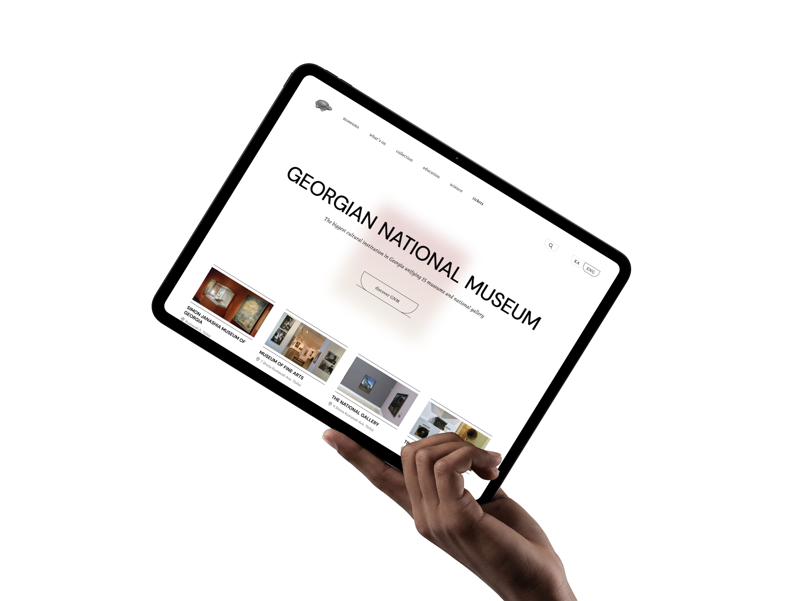
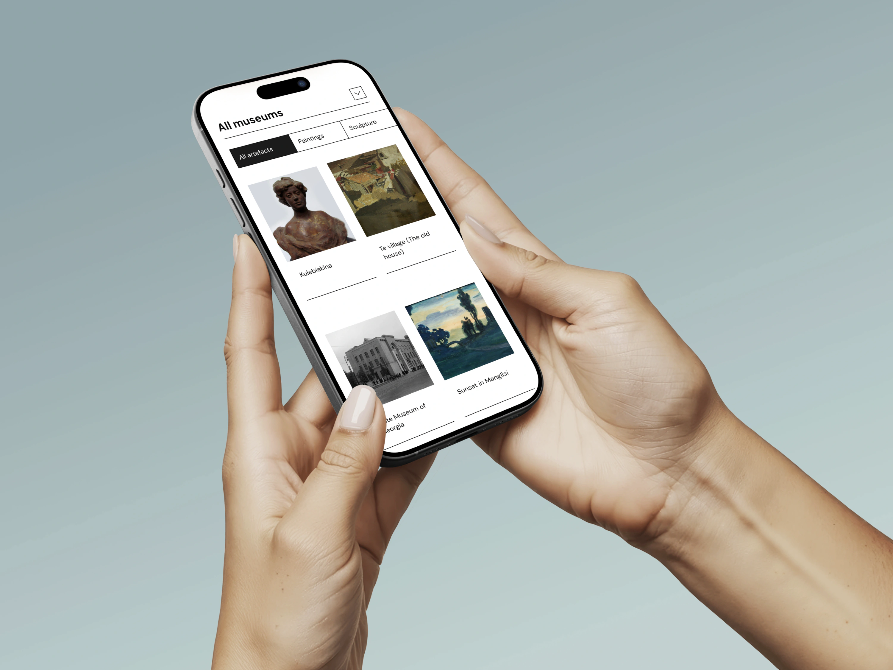
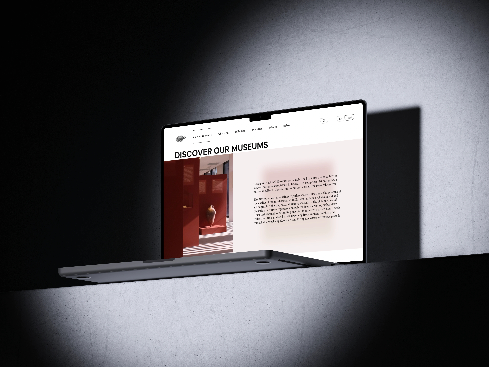
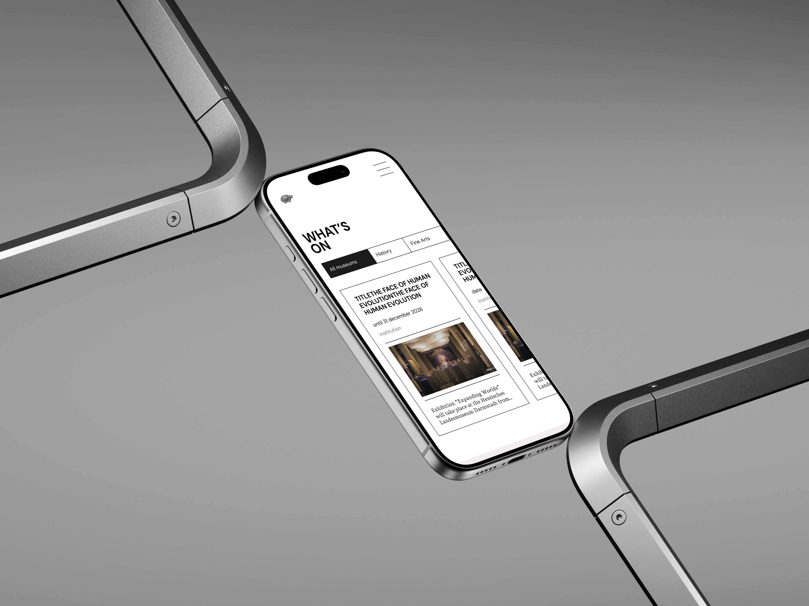
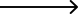
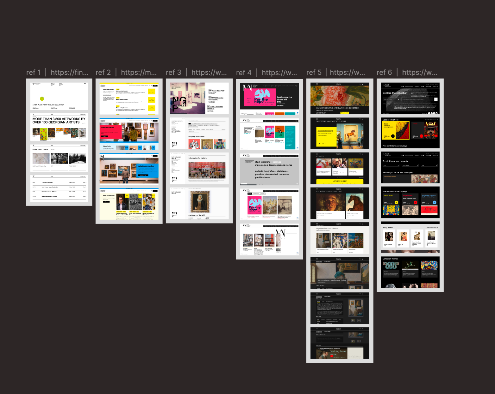
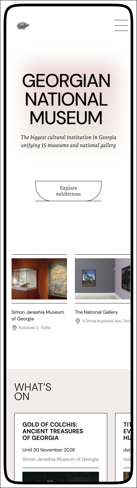
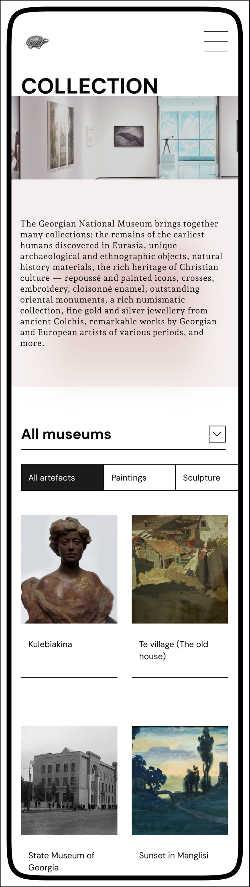
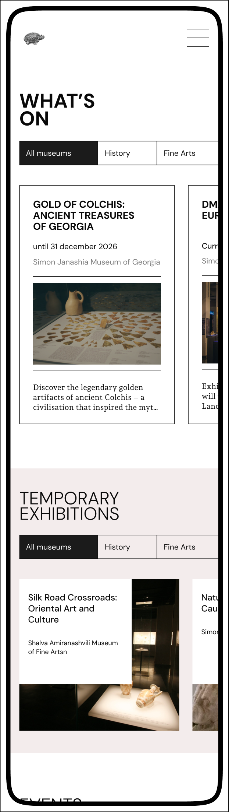

Redesign
of Georgian National Museum Website

The Georgian National Museum (GNM) brings together more than 10 museums across Georgia, each with
its own collections, exhibitions and identity.
Inspired by a visit to one of them,
I created an independent, non-commercial concept redesign of the GNM website




The original website didn’t clearly communicate that GNM is a network of distinct museums. Essential visitor information, such as opening hours and ticket purchasing, was difficult to find and often required visiting external websites
Design Process

1/3 References
I explored museum websites, collecting and organising visual references to inform the layout, typography and interaction patterns of the new interface. This helped me explore different design approaches and establish a visual direction for the project
Screens


